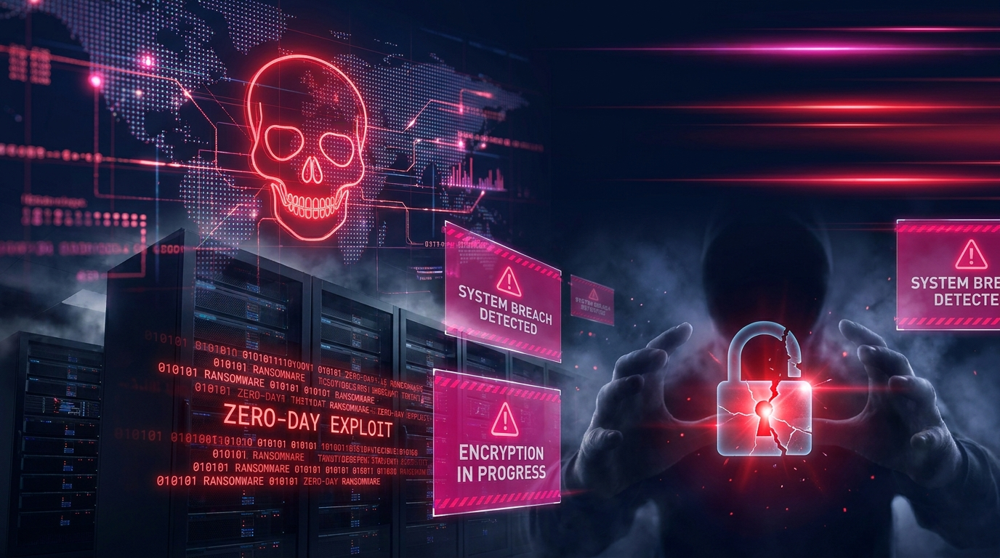
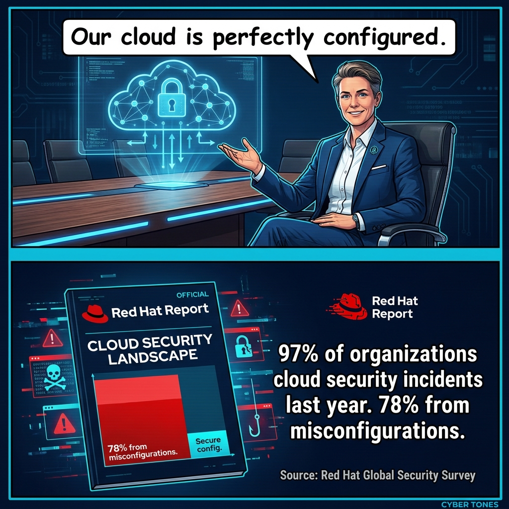

Vol. 2, Issue 17 | April 26, 2026
Weekly IT & Security Intelligence for CISOs and IT Leaders
The security landscape shifted again this week in ways that demand your immediate attention: Anthropic's Mythos AI autonomously discovered 271 zero-days in Firefox, and if a research lab can weaponize AI at that scale, assume adversaries already have. AI-generated phishing has now surpassed every other initial access vector â your users are facing lures indistinguishable from legitimate communications, crafted at machine speed and personalized at machine scale. Meanwhile, Kyber ransomware has entered the arena encrypting victim data with post-quantum algorithms, a direct signal that threat actors are building for a future where your current cryptographic defenses become obsolete overnight. Add a leadership vacuum at CISA, persistent cloud security execution failures, and a Scattered Spider prosecution that closes one chapter but leaves the social engineering playbook wide open â and this week's briefing is one you cannot skim.
Source: Ars Technica | April 21, 2026
Anthropic's Mythos AI model uncovered a staggering 271 zero-day vulnerabilities in Firefox 150 during a Mozilla-commissioned security assessment â a number that would take even elite human research teams months or years to accumulate. Mozilla's CTO publicly acknowledged that Mythos performed at a level matching the world's top security researchers, signaling that AI has crossed a meaningful capability threshold in vulnerability discovery. The findings are a double-edged revelation: the same autonomous analysis power that can harden software at unprecedented speed can just as easily be weaponized by threat actors hunting for exploitable weaknesses. The security community is now grappling urgently with what it means when zero-day discovery becomes a machine-scale operation.
AI models that can independently discover hundreds of zero-days represent a paradigm shift in vulnerability research â CISOs should both leverage such tools for proactive security testing and prepare for adversaries doing the same at scale. If your organization is not yet running AI-assisted red-teaming or vulnerability assessment programs, your attack surface is already being evaluated by someone who is.
Source: Dark Reading | April 24, 2026
AI-powered phishing has surged to the top of the cybercriminal playbook, with adoption accelerating at a pace that is outrunning most enterprise defenses. Attackers are now using AI to craft highly personalized, grammatically flawless lures at industrial scale â eliminating the typos and awkward phrasing that security awareness training historically taught employees to spot. The result is a generation of phishing campaigns that are effectively indistinguishable from legitimate correspondence, even to trained and vigilant users. Security experts are sounding the alarm that traditional phishing awareness programs, while still valuable, are no longer sufficient as a primary line of defense in this new threat environment.
When AI enables perfect, personalized phishing at machine speed, human detection becomes the weakest link â CISOs must layer technical controls including AI-based email filtering, rigorous DMARC enforcement, and phishing-resistant MFA to compensate. Rethink your security awareness budget allocation: the era of click-the-red-flag training as a cornerstone defense is over.
Source: InfoSecurity Magazine | April 24, 2026
Mandiant's VP of Consulting is raising a pointed warning: in the race to deploy AI, enterprises are repeating the exact security mistakes that defined the early days of cloud and mobile adoption. The most common failures include inadequate input validation on AI systems, weak access controls, and a near-total absence of security-by-design thinking in AI integration projects. As AI tools are woven rapidly into security operations centers, HR systems, and business workflows, the attack surface is expanding in ways many organizations haven't fully mapped. The irony is sharp â the same sector racing to use AI for defense is deploying it with the kind of carelessness that creates the vulnerabilities AI is meant to find.
The pressure to deploy AI fast is creating technical debt with serious security consequences that will compound over time â CISOs should enforce AI security baselines equivalent to those applied to any other enterprise software deployment. Treat every AI integration as a first-class security event: demand threat modeling, access reviews, and input/output validation before any system goes live in production.

Source: TechCrunch | April 24, 2026
Researchers have unmasked yet another commercial spyware vendor caught red-handed deploying fake Android applications engineered to silently surveil unsuspecting targets. The operation fits an accelerating pattern of surveillance-as-a-service vendors cloaking their tools inside seemingly legitimate apps to bypass scrutiny from both users and app store gatekeepers. What makes this discovery particularly alarming is the sophistication of the disguiseâthese are not crude knockoffs, but polished applications designed to evade detection for extended periods. The proliferation of such tools in consumer ecosystems signals that the barrier to entry for deploying enterprise-grade surveillance against individuals has never been lower.
The commoditization of mobile spyware through fake apps represents a growing supply chain and insider threat riskâCISOs managing BYOD and mobile fleets need enhanced app vetting and MDM controls. Every unmanaged personal device connecting to corporate resources is a potential ingress point for surveillance tools that your SOC will never see coming. Now is the time to audit your mobile threat defense stack and enforce strict application allowlisting policies before a fake app becomes your next breach vector.
Source: TechCrunch | April 23, 2026
Sean Plankey, the White House's nominee to lead the Cybersecurity and Infrastructure Security Agency, has formally requested to withdraw from considerationâleaving the nation's premier cyber defense body without a confirmed director at one of the most precarious moments in recent memory. The leadership vacuum arrives as nation-state threat actors continue to escalate operations against US critical infrastructure and private sector targets with documented impunity. CISA's ability to coordinate federal cyber response, issue timely advisories, and maintain threat intelligence sharing pipelines depends heavily on executive direction and political capital. Without a confirmed director, the agency risks operating in a holding pattern precisely when decisive action is most needed.
A leaderless CISA weakens the federal government's central cybersecurity coordination functionâCISOs relying on CISA advisories and threat intelligence sharing should closely monitor how this transition affects agency output and response timelines. Organizations that have built incident response playbooks around CISA resources should not assume business as usual; diversify your threat intel feeds now and establish direct relationships with sector-specific ISACs to reduce dependency on federal coordination that may be slow to materialize during this leadership gap.
Source: TechCrunch | April 23, 2026
A damning new investigation has exposed surveillance vendors exploiting their privileged access to telecommunications infrastructure to conduct unauthorized real-time location tracking of individualsâleveraging well-known but persistently unpatched weaknesses in the SS7 signaling protocol. Researchers warn that the practice is far more widespread than regulators or the public have been led to believe, with multiple vendors reportedly operating these capabilities with minimal oversight. SS7 vulnerabilities have been publicly documented for over a decade, yet the telecom industry's slow remediation has left a gaping attack surface that commercial actors are now systematically monetizing. The revelation strips away any remaining assumption that cellular networks provide a safe communications baseline for sensitive individuals or organizations.
Telecom infrastructure abuse by commercial surveillance operators poses a direct and immediate threat to executive and high-value employee privacyâorganizations should urgently evaluate whether their mobile carriers have deployed adequate SS7 filtering and monitoring controls. For organizations operating in high-risk sectors or with executives who are likely targeting candidates, it is time to seriously evaluate encrypted VoIP solutions, eSIM rotation strategies, and purpose-built secure communications platforms that do not rely on the integrity of legacy telecom signaling infrastructure.
Source: Red Hat / Cloud Computing News | March 24, 2026
Red Hat's 2026 State of Cloud-Native Security Report delivers a sobering verdict: 97% of organizations suffered at least one cloud-native security incident over the past year, with misconfigurations accounting for a staggering 78% of those events. Despite the scale of exposure, only 39% of organizations have achieved genuine security maturity â even as 56% self-identify as proactive â revealing a dangerous confidence gap that leaves enterprises far more vulnerable than their leadership teams believe. The report also flags AI adoption as an accelerant of risk, with 96% of respondents expressing concern over shadow AI tools operating unchecked within cloud environments. Together, these findings paint a picture of an industry running faster than its security controls can keep pace.
The gap between security confidence and actual maturity is a critical blind spot for CISOs â the same misconfigurations that drove last year's breaches are being compounded by unmanaged AI workloads in cloud environments. Organizations must close the execution gap with rigorous configuration audits and formal AI governance policies before that 97% becomes 100%.
Source: Security Boulevard / eSecurity Planet | April 22, 2026
A sharp escalation in attacks targeting Kubernetes misconfigurations is reshaping the cloud threat landscape in 2026, as adversaries systematically exploit permissive service account configurations and weak identity controls to harvest authentication tokens for unauthorized cloud access. IT sector organizations are bearing the brunt of the campaign, with threat actors leveraging stolen tokens to pivot laterally across cloud estates at scale. Security researchers note that the attacks exploit well-documented weaknesses that many organizations have failed to remediate despite years of published guidance. Immediate defensive priorities include enforcing strict Role-Based Access Control (RBAC) policies, adopting short-lived token architectures, and deploying runtime monitoring capable of detecting anomalous workload behavior in real time.
Kubernetes is the backbone of modern cloud infrastructure â a single misconfiguration can hand attackers lateral movement across entire cloud estates with minimal friction. CISOs must elevate Kubernetes security hygiene from a DevOps checklist item to a board-level infrastructure risk, with dedicated ownership, continuous posture assessment, and zero-tolerance policies for permissive defaults.
Source: eSecurity Planet | April 23, 2026
Italian security authorities have sounded the alarm on a sustained and intensifying wave of ransomware campaigns targeting Azure-hosted environments operated by small and medium enterprises, with attackers exploiting unpatched SSL VPN devices and exposed perimeter systems as their primary entry vectors. The campaign, which gained momentum in early 2026 and escalated sharply through April, demonstrates a calculated threat actor strategy of using cloud environments not merely as targets but as pivot infrastructure for broader network compromise. SMEs â often operating with leaner security teams and slower patching cadences â have proven particularly susceptible to this approach, with their cloud migrations inadvertently expanding the attack surface rather than consolidating it. The incidents reinforce a critical lesson: migrating workloads to Azure or any major cloud platform does not inherently reduce exposure if perimeter hygiene and patch management practices remain inconsistent.
The Azure ransomware wave underscores that cloud adoption without rigorous patching and VPN hygiene simply relocates the attack surface â it does not eliminate it. IT leaders supporting SME environments must ensure cloud perimeter devices are placed on accelerated patching schedules, with unpatched VPN appliances treated as critical vulnerabilities warranting immediate remediation regardless of organizational size or resource constraints.
Source: MIT Technology Review | April 24, 2026
DeepSeek's V4 model has arrived, and it's rewriting the rules of the AI efficiency game. Achieving competitive frontier-level performance while demanding significantly fewer computational resources than leading US counterparts, V4 is a decisive validation of China's hardware-constraint optimization strategy â proving you don't need cutting-edge chips to build cutting-edge AI. Developed under the shadow of US export restrictions, the model is being hailed as a landmark win for Chinese semiconductor developers who chose to engineer around limitations rather than wait them out. Analysts are now reassessing assumptions about the long-term effectiveness of chip controls as a geopolitical lever in the AI race.
DeepSeek V4 demonstrates that frontier AI capability is achievable without US-controlled hardware, accelerating competitive AI development well outside American regulatory reach. IT leaders evaluating AI supply chain sovereignty can no longer treat Western vendor ecosystems as the only viable path to performant models â this development should immediately inform vendor selection, model sourcing strategy, and geopolitical risk assessments across the enterprise AI stack.
Source: Ars Technica / BleepingComputer | April 23, 2026
The ransomware threat landscape just crossed a significant threshold: the Kyber gang has become the first confirmed threat actor to deploy post-quantum cryptography in their encryption scheme, signaling that criminal operators are actively future-proofing their toolkits ahead of the quantum era. While there's no practical decryption advantage today â quantum computers capable of breaking classical encryption remain years away â the move stakes out territory and demonstrates alarming foresight from adversaries. Researchers suggest this may partly be a market differentiation play within the ransomware-as-a-service ecosystem, designed to command premium ransom payments by advertising quantum-resistant encryption. Regardless of motivation, the direction of travel is now unmistakable: threat actors are preparing for the post-quantum world before most defenders are.
When ransomware operators adopt PQC before most enterprise defenders have even begun planning for it, the quantum threat to encryption moves decisively from theoretical to operational. CISOs should treat this as a forcing function â quantum readiness roadmaps, post-quantum key management frameworks, and cryptographic agility initiatives need to accelerate now, not after the first wave of PQC-hardened ransomware makes legacy recovery tools obsolete.
Source: BleepingComputer | April 25, 2026
Microsoft has issued an out-of-band emergency security update to address a critical remote code execution vulnerability in ASP.NET â a patch that couldn't wait for the next scheduled Patch Tuesday because attackers were already exploiting it in the wild. The flaw's CVSS score places it firmly in the "drop everything" category, and the fact that Microsoft broke from its standard cadence to release a fix underscores just how severe active exploitation has become. Any organization running internet-facing .NET web infrastructure is potentially exposed, making rapid deployment of the patch non-negotiable. The emergency release serves as a blunt reminder that threat actors operate on their own schedule, and patch management processes built around monthly cycles are increasingly inadequate for today's threat environment.
Out-of-band emergency patches are a direct signal of active, in-the-wild threat actor exploitation â and they demand a fundamentally different operational response than routine monthly updates. IT and security leaders must ensure they have clearly defined processes, tested runbooks, and the organizational authority to deploy critical patches to internet-facing infrastructure within hours, not days. If your patch SLA clock still runs on weeks for externally exposed systems, this incident is the wake-up call to change that.
Source: Wired | April 23, 2026
Researchers have finally cracked the code on Fast16 â a mysterious malware sample that had resisted analysis for years â and what they found rewrites the known history of cyber warfare. The code appears to predate Stuxnet as a sabotage tool targeting Iran's nuclear infrastructure, capable of silently destroying industrial control systems with a sophistication that points unmistakably to nation-state origins. The discovery adds a hidden chapter to the ICS/SCADA threat timeline, suggesting that the groundwork for weaponized cyber attacks on critical infrastructure was being laid earlier and more extensively than previously understood. For the security community, Fast16 is not just a historical curiosity â it is evidence of a long, deliberate development arc in offensive cyber capabilities that continues to evolve today.
The uncovering of pre-Stuxnet ICS malware is a stark reminder that nation-state cyber weapons targeting critical infrastructure have a deeper and more sophisticated lineage than the public record has reflected. For CISOs in energy, utilities, manufacturing, and other industrial sectors, this is a prompt to reassess legacy OT and ICS threat models â the adversaries targeting these environments have been refining their craft for decades, and threat libraries built on recent history alone are dangerously incomplete.
44% of cybersecurity breaches now involve ransomware â up 37% year-over-year â average incident cost: $1.85 million.
â Verizon DBIR 2025
97% of organizations experienced at least one cloud-native security incident last year; 78% caused by misconfigurations.
â Red Hat 2026
Cybercrime costs expected to reach $13.82 trillion annually by 2028.
â Cybercrime Magazine 2026
GenAI security training could reduce employee-caused incidents by 40%.
â VikingCloud 2026
90% of frontline security managers report more frequent attacks; 88% report increased severity.
â VikingCloud 2026
AI phishing is now the #1 initial access technique â traditional training alone is insufficient.
â Dark Reading / Mandiant 2026

The CISO's weekly reality check — courtesy of Cyber Tones.
The threat landscape is evolving faster than your incident response playbook.
Scattered Spider just recruited an AI to find zero-days, a quantum computer to encrypt the ransom, and blamed the whole thing on an S3 bucket left open by legal. Security vendors are calling it a 'full-stack breach.' We're calling it a Tuesday.
#834 — Vercel Gets Owned, Mozilla Dumps Hundreds of Mythos Bugs
Hosts: Patrick Gray, Adam Boileau, James Wilson
Episode #834 dives into the Vercel data breach and what it means for developer platform security, plus the staggering news from Mozilla that Anthropic's Mythos AI found 271 zero-day vulnerabilities in Firefox 150. The hosts break down the implications of AI-assisted vulnerability research and what it signals for the future of offensive and defensive security alike.
Listen Now →Weekly briefings for CISOs and IT leaders who can't afford to fall behind.
Follow Parks H. Holt on LinkedIn →The convergence of AI-powered offense, post-quantum ransomware, and eroding institutional leadership means the margin for slow decisions has effectively reached zero. Review your phishing-resistant MFA posture, audit your cryptographic inventory, and pressure your cloud teams to close the execution gaps you already know exist. Your adversaries are not waiting â neither should you.
Parks H. Holt
Created by Parks H. Holt — Cyber Modernization & AI Enthusiast